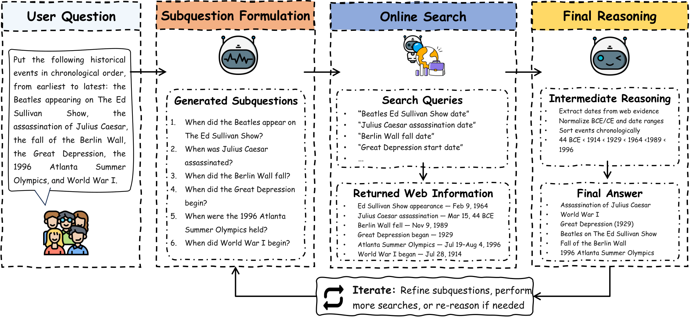
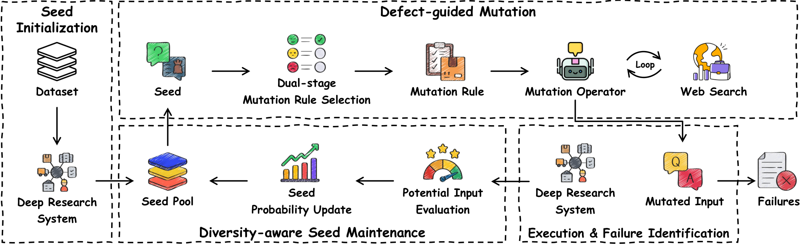
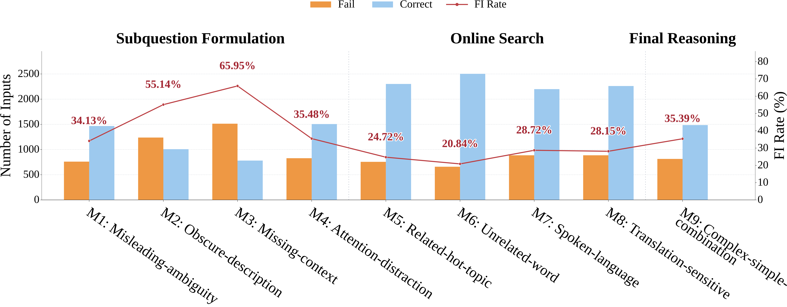

目录 · 8 节
1一个问题，换种问法就答错2先看清错在哪一步3EMBERS 的流程：从答对的题出发改写4结果：同样 24 小时，找到的失败多得多5测试产生的轨迹还能拿来训练6我认为它的局限7搜索团队可以怎么试8结论Deep Research 系统会把问题拆成子问题、反复上网搜索、再汇总作答，问法稍一变化，前面的小偏差就可能一路传下去，最后答错。作者分析了三个代表性系统的 1,932 条执行轨迹，归纳出九类反复出现的缺陷，分布在拆子问题、在线搜索和最终推理三个阶段。作者据此做了测试框架 EMBERS（缺陷引导的模糊测试），它从系统本来答对的问题出发，针对这些缺陷改写问题或中间的搜索输入，同时核对改写后问的还是同一件事。在同样 24 小时的测试预算下，它找出的失败用例是最强基线 DR-Arena 的 3.21 倍。测试中产生的执行轨迹拿去微调，还能让模型的回答更一致。
做搜索智能体或 Deep Research 产品的团队值得读。它最有用的不是"又一个测试框架"，而是那张按阶段整理的缺陷表：近三分之二的错误出在拆子问题这一步，比搜索和推理加起来还多。先定位错在哪一步，再照着那一步的弱点去改写问题，能找到多得多的失败。在这篇的对比里，EMBERS 找到的失败是同义改写基线的 7.87 倍，因为同义改写大多碰不到系统真正薄弱的地方。要提醒的是，这些失败都由自动判分认定。人工抽查 384 条改写结果，自动判分有 88.02% 判对。
一个问题，换种问法就答错
论文观察到过这样一个缺陷：系统拆子问题时，把"美国派4 故事 设定 时间"简化成了"美国派4 故事 时间"，丢掉了"设定"这个限定词，可能因此搜到上映日期而不是剧情年代。下表是按这个缺陷编的示意，原问题、改写和两次结果都是编的，用来说明 EMBERS 想测什么。
| 内容（示意） | |
|---|---|
| 原问题 | 《美国派4》的故事设定在哪一年？ |
| 系统拆出的子问题 | "美国派4 故事 设定 时间" → 搜到剧情年代，答对 |
| 改写后的问题 | 《美国派4》里，主角们经历的这些事发生在哪一年？（不再直接说"故事设定"，问的仍是剧情年代，答案不变） |
| 系统拆出的子问题 | "美国派4 年份" → 搜到上映日期，答错 |
原问题答对，只说明系统在这一种问法下能走通。换一种同样意思的问法，前面某一步走偏，后面的搜索和推理会顺着错的方向越走越远。
先看清错在哪一步
作者收集了 DeepDiver、WebSailor、WebExplorer 三个系统在三个基准上的 1,932 条执行轨迹。他们从答错的轨迹里随机抽了 384 条，人工逐条找"最早出现、之后没被纠正"的那个错误，把失败归到它所在的阶段。

| 阶段 | 占失败比例 | 典型缺陷 |
|---|---|---|
| 拆子问题 | 65.6% | 措辞含糊读错（18.8%）、拆题时丢了限定条件（18.5%）、盯着显眼线索漏掉关键线索（17.4%）、只给间接描述认不出实体（10.9%） |
| 在线搜索 | 24.2% | 网页读不出来（11.2%）、搜索词带了无关词或口语（5.7%）、被热门相关话题带偏（4.7%）、翻译走样（2.6%） |
| 最终推理 | 10.2% | 资料都搜到了，最后的数数、排序、加法却算错（10.2%） |
最终推理这一类很能说明问题。比如问"列侬出生年份和去世年份相加是多少"，系统搜到了两个年份，最后却把年份的各位数字加了起来。研究过程越长，系统越容易忘了题目到底要它算什么。作者也提醒，这些比例描述的是这几个系统的失败来源分布，不是每个阶段出错的概率。
EMBERS 的流程：从答对的题出发改写
EMBERS 把这张缺陷表变成九条改写规则。整个流程是一个循环：挑一道系统答对过的题，选一条规则改写，交给系统重跑，看它还答不答得对。

第一步是挑种子题。每道候选题让系统独立跑三次，三次都答对才留下，作为"种子"。这样能先排除那些系统本来就时对时错的题，后面答错时更可能是改写造成的。不过随机性没法完全排除。种子同时保存原题、标准答案和系统那次的完整执行轨迹。标准答案只留在测试框架这边，判分时才用；重跑时系统拿到的只有问题，或者轨迹里改写点之前的部分。
第二步是先选改哪里，再选怎么改。改写的位置有两类：原问题，或者轨迹中间的某个子问题或搜索词（下面统称子问题）。EMBERS 先各以一半的概率选位置，再从这个位置适用的规则里随机挑一条。原问题配五条规则：改成容易误读的措辞、换成间接描述、把限定条件写得不那么明显、加入真实但无关的背景、在题里加一步数数或排序。最后一条要求题目最终问的东西不变，比如先让系统把几件相关的事按时间排好，最后仍然只回答原题要的那个答案（示意）。子问题配四条：掺入热门相关话题、掺入无关高频词、改成口语、改用别的译名或中英混写。先选位置是为了不让规则多的那一边分走大部分测试机会。"网页读不出来"这类缺陷属于外部环境，作者没有为它设计规则。
第三步是改写并核实。改写由一个大模型完成，作者用的是 DeepSeek-V3.2。它先找出题里哪些成分能改、哪些条件必须保留，再定改写方向。动笔之前它会上网搜索，核实新描述确实指向同一个对象。比如把一个事件名换成间接描述时，要先搜索确认这个描述只对应这一个事件。写完后，它再对照原问题检查一遍改写是否还在问同一件事，并记下改写和搜到的依据。
第四步是重跑并判分。改原问题时，系统从头重跑。改子问题时，系统保留改写点之前的全部推理和搜索记录，把轨迹里那一条子问题或搜索词的文本换成改写后的版本，之后的搜索和推理由系统自己接着生成。跑完后，同一个 DeepSeek-V3.2 换用一套单独的判分提示，拿系统的最终回答和标准答案比对。这一步只在测试时做，被测系统作答时看不到标准答案。原题答对、改写后答错，才算找到一个失败用例。
第五步是决定哪些输入留下继续改。EMBERS 用"来自哪道原题、最近一次用了哪条规则"给每个输入分组。同一组里，只有执行轨迹比这组以往都长的输入才留下。这里的步数包括推理步骤和工具调用。作者把轨迹长度当作一个粗略的信号：在前面的统计里，答错的轨迹平均 19.86 步，答对的平均 15.19 步。种子被挑中的机会会越来越小。每个种子的权重从 1 开始：它离原题每多改一代记 1 分，每被挑中一次记 0.5 分，权重随总分按指数下降，总分到 10 分时降到 0.05。每轮按权重比例抽种子。这样既少在同一道题上反复打转，也避免改得离原题太远。 Hoot 说

横轴是种子的总分：离原题每多改一代加 1 分，每被挑中一次加 0.5 分。示意：改过 2 代、被挑过 2 次，总分是 3，权重约 0.41。这样测试机会会更多流向新题，改写也不容易离原题越走越远。 出处: 论文 §4.3.4 种子概率更新：P = P_init·e^{-α(w1·代数 + w2·被挑次数)}，P_init = 1，P_finish = 0.05，max_times = 10，w1 = 1，w2 = 0.5
结果：同样 24 小时，找到的失败多得多
实验覆盖两个框架（WebSailor、WebExplorer）和两个模型交叉成的四种配置，乘以四个数据集，共 16 组设置。三种方法用同一批种子、同一个判分器、同样 24 小时。
| 方法 | 16 组设置合计找到的失败 | 人工判断"问的还是同一件事" | 人工认可自动判分 |
|---|---|---|---|
| RobustAlpacaEval（同义改写） | 1,060 | 99.22% | 89.32% |
| DR-Arena（从网上现造新题） | 2,595 | 28.13% | 58.59% |
| EMBERS | 8,340 | 93.49% | 88.02% |
EMBERS 在 16 组设置里有 15 组找到的失败最多。只看数量还不够，还得看这些失败算不算数。DR-Arena 生成的题只有 28.13% 还在问原来那件事，它找到的很多"失败"其实是题目本身变了。同义改写几乎不改原意，但也很难让系统出错。EMBERS 介于同义改写和 DR-Arena 之间：改动足够大，能碰到系统的弱点，同时九成多的题还在问同一件事。

分规则看，最管用的是"把限定条件写得不那么明显"和"换成间接描述"，改写后答错的比例分别是 65.95% 和 55.14%。这两条都打在拆子问题这一步，和前面缺陷表的结论一致。搜索阶段里，改成口语和换译名比掺无关词更有效，掺无关词的失败率最低，只有 20.84%。
消融只在 4 组设置上做：WebSailor 配 WebSailor-32B、WebExplorer 配 WebExplorer-8B 这两种框架配自家模型的组合，各跑 FRAMES（多跳问答基准）和它的中文版 FRAMES-ZH。逐项去掉组件后，失败数都会下降。去掉改写时的网络搜索，失败数少了 27.85%，生成的测试题也少了 32.86%。把"先选位置再选规则"换成直接从九条规则里随机挑，测试题数量差不多，失败数少了 19.91%，说明这一步的作用是把测试机会分给更容易出错的地方。种子维护的贡献最小，失败数少了 4.59%。
测试产生的轨迹还能拿来训练
作者用 EMBERS 在 OpenSeeker 上产生的执行轨迹微调 WebSailor-32B。先拿答对的轨迹做 LoRA SFT，再用 KTO（Kahneman–Tversky Optimization）做一轮偏好优化，把答对和答错的轨迹分别当正负例。评测用的 FRAMES 和 FRAMES-ZH 都不在训练数据里。每道题跑三次，三次都对才算"稳定答对"。
| 评测集 | 微调前稳定答对 | 微调后稳定答对 |
|---|---|---|
| FRAMES | 48.54% | 54.49% |
| FRAMES-ZH | 60.43% | 69.57% |
这说明测试中产生的轨迹除了用来报 bug，还能当训练数据，让系统在原题上更稳。其中答错的轨迹只在 KTO 里当负例。不过作者自己也说，还没有验证微调后的模型面对改写的问题是否也更稳。
我认为它的局限
一是失败数靠自动判分。人工抽查的 384 条改写结果里，88.02% 的判分是对的，错判在"答对"和"答错"两边差不多各占一半。改写和判分用的是同一个模型，偏差可能相互关联。所以 8,340 是"疑似失败"，具体到每一条还得人工确认。
二是改写仍会走样。人工判断 93.49% 的题还在问原来那件事，88.80% 保留了确定答案所需的全部条件。作者分析有问题的输入：63.2% 删掉了确定答案所需的线索，31.6% 额外加了要求、把标准答案也改了，5.1% 没按指定规则改。
三是每道改写题只跑一次。种子题要求三次都对，改写题却只跑一次。系统本身有随机性，部分"失败"可能只是偶然没答对，作者为了在 24 小时内多测几道题接受了这个代价。
搜索团队可以怎么试
- 从线上日志里挑一批系统连续三次都答对的问题，保存完整的执行轨迹。
- 先抽一两百条答错的轨迹，按"拆子问题、搜索、推理"人工标出最早的错误，看看自己系统的分布和论文是否一样。
- 优先实现失败率最高的两条规则：把限定条件写含糊、把实体名换成间接描述，改写前用搜索核实描述只指向一个对象。
- 改写结果里抽一部分人工检查是否还在问同一件事，再看失败用例集中在哪类问题上。
- 把稳定复现的失败用例放进回归测试集，再考虑当训练数据用。
结论
EMBERS 的价值在于先弄清 Deep Research 系统通常错在哪一步，再照着这些弱点去造测试题，而不是盲目换问法。
| 维度 | 评价 |
|---|---|
| 问题重要性 | 高。Deep Research 链路长，一步走偏就会一路错下去 |
| 方法创新性 | 中高。按阶段整理的缺陷表直接变成改写规则，并能从中间步骤接着跑 |
| 实验证据 | 较强。16 组设置、逐项消融、人工复核都有，但失败数依赖自动判分 |
| 工程成本 | 中。需要能保存轨迹、从中间步骤恢复执行的系统，以及大量重跑预算 |
| 是否值得尝试 | 值得。前两条规则和缺陷标注方法可以直接拿来做回归测试 |
读完这篇，你觉得
夜读鸮记下了，谢谢你的反馈。
点一下即可，无需登录；再点一次撤回。只统计匿名次数，不记录你是谁。
讨论
欢迎补充实验细节、复现经验或不同看法。需 GitHub 登录。
正在加载讨论…